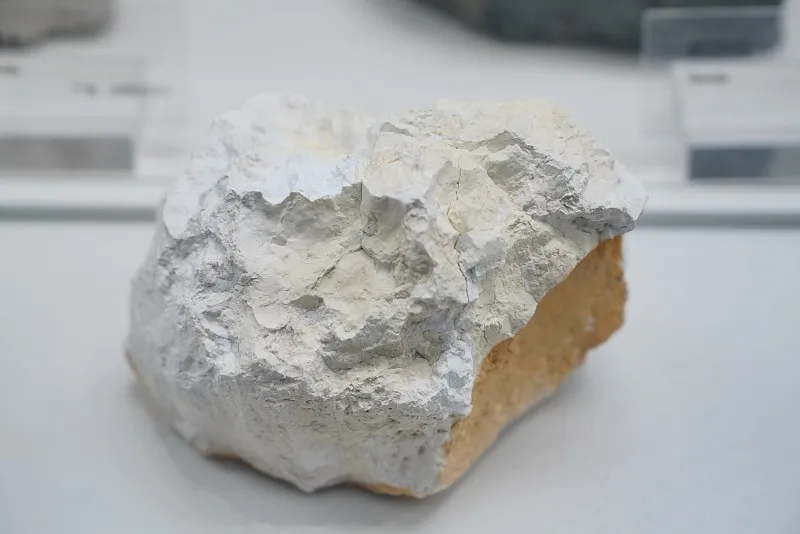
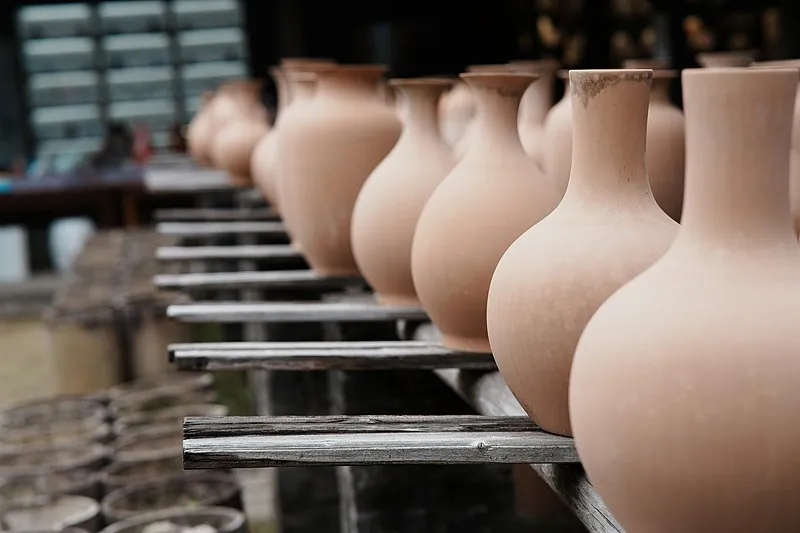
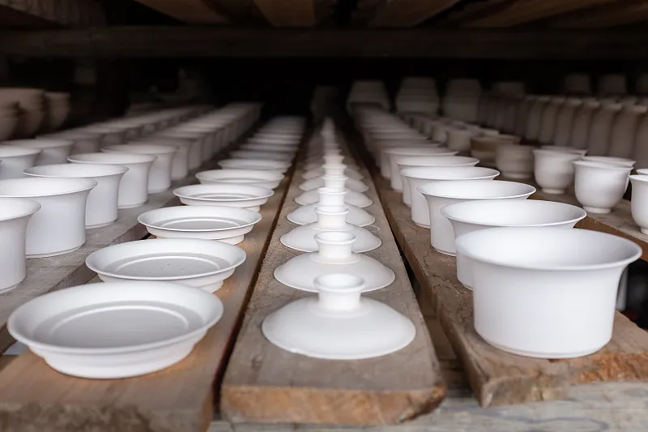
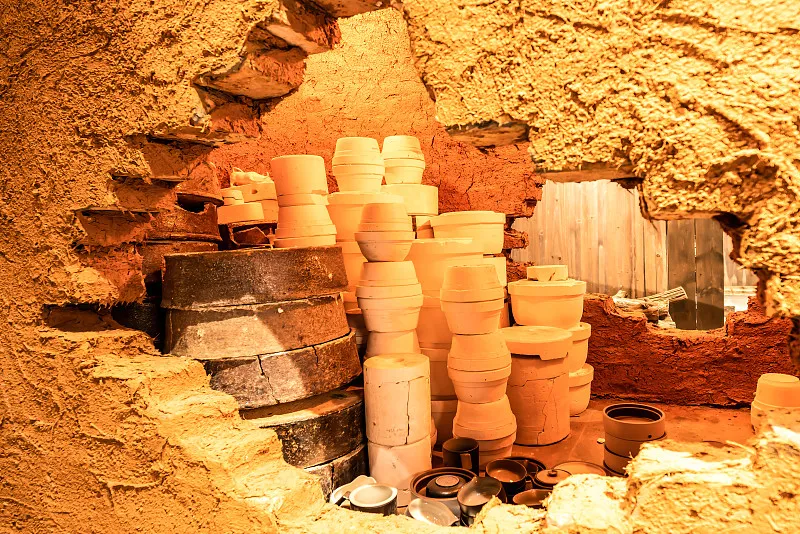
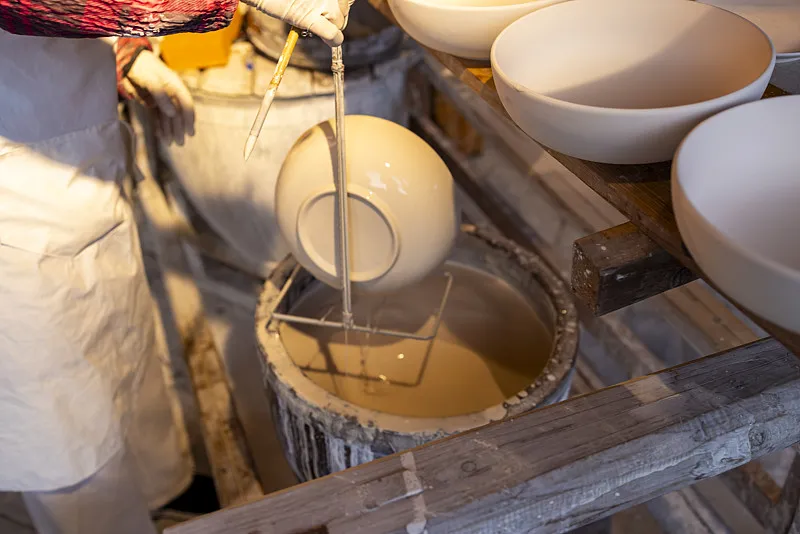
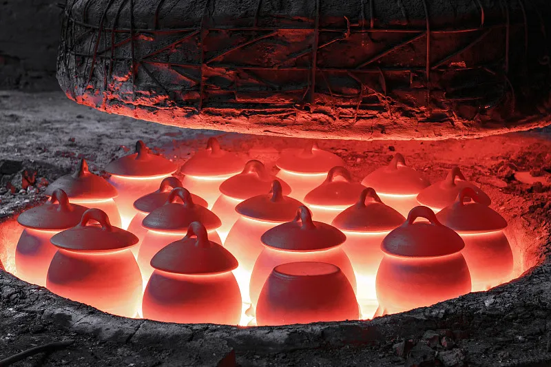
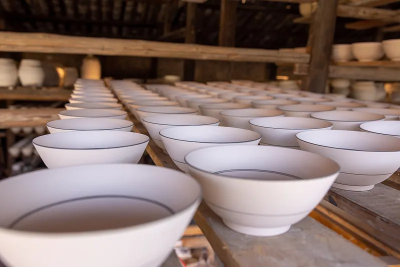
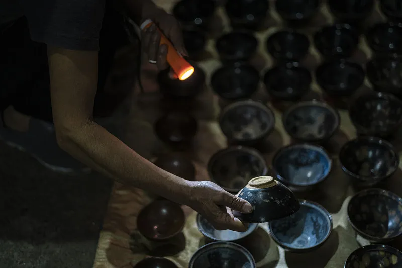

从泥土到精美的瓷器，需要经过8道核心工序，每一步都凝聚着匠人的智慧与千年传承
陶瓷的主要原料是瓷土，又称高岭土。优质的瓷土需要经过精选、淘洗、粉碎、过筛等多道工序，去除杂质，提高纯度。不同产地的瓷土成分差异会直接影响瓷器的质地和色泽。
景德镇高岭土以其高铝低铁的特性闻名于世，是制作高档瓷器的理想原料。其独特的矿物组成赋予了瓷器"白如玉、明如镜、薄如纸、声如磬"的特点。


成型是将泥料制成各种形状坯体的过程。传统方法有拉坯、捏塑、雕刻等，现代工业生产则广泛采用注浆、旋压、滚压等机械化工艺。每种方法都有其适用范围和特点。
适合艺术创作和个性化产品，每件作品独一无二
适合大批量生产，产品精度高，一致性好
从手工拉坯到现代注浆成型，陶瓷成型技术经历了数千年的演变。现代工艺在保持传统精髓的同时，大大提高了生产效率和产品一致性。
干燥是去除坯体中水分的过程，直接影响产品质量。干燥过快会导致坯体开裂、变形，过慢则影响生产效率。现代干燥技术能够精确控制温湿度，确保干燥过程均匀稳定。
理想的干燥过程分为三个阶段：升速干燥、等速干燥和降速干燥。控制每个阶段的温湿度和风速，能够最大限度地减少干燥缺陷。


素烧是陶瓷烧制的第一道火，将干燥后的坯体在低温下煅烧，使其硬化并具有一定的强度。素烧后的坯体称为"素胎"，质地疏松多孔，能够很好地吸附釉料。
素烧通常在700-900℃进行，使坯体初步烧结，提高强度和吸水性，便于后续施釉操作。升温速度和保温时间是素烧质量的关键控制参数。
施釉是在素胎表面覆盖一层玻璃质釉层的过程。釉层不仅能美化瓷器，还能提高其机械强度、化学稳定性和热稳定性。不同的施釉方法会产生不同的釉面效果。
釉料主要由石英、长石、高岭土和助熔剂组成。通过调整配方和添加金属氧化物，可以获得各种颜色和质感的釉面效果。


釉烧是陶瓷烧制的核心环节，在高温下釉料熔融形成玻璃质层，同时与坯体发生化学反应，形成牢固的结合。釉烧过程中，窑内的气氛（氧化或还原）对瓷器的最终颜色和质感有决定性影响。
釉烧是陶瓷烧制的关键工序，温度通常在1200-1400℃。精确控制升温速度、最高温度和保温时间，能够确保釉面光滑平整，色泽均匀。
冷却是烧制过程的最后阶段，同样至关重要。冷却速度过快会导致釉面开裂、坯釉分离，过慢则会影响生产效率。不同的瓷器品种需要不同的冷却曲线。
传统柴窑冷却需要3-5天，现代气窑可以精确控制冷却速度，在24小时内完成冷却过程，同时保证产品质量。


出窑后的瓷器需要经过严格的质量检验，剔除有缺陷的产品。检验项目包括外观质量、尺寸精度、釉面质量、强度测试等。只有符合标准的产品才能进入市场。
检查变形、开裂、缺釉、斑点、气泡等缺陷
测试吸水率、热稳定性、机械强度等指标
现代陶瓷生产通过严格的质量控制体系，将成品合格率从传统工艺的不足50%提高到了95%以上。但顶级艺术瓷的成品率仍然较低，这也是其珍贵的原因之一。
结合行业数据可视化，直观感受陶瓷产业发展规模与千年工艺技术进步
年陶瓷烧制历史
℃最高烧制温度
道核心工序
%现代成品合格率